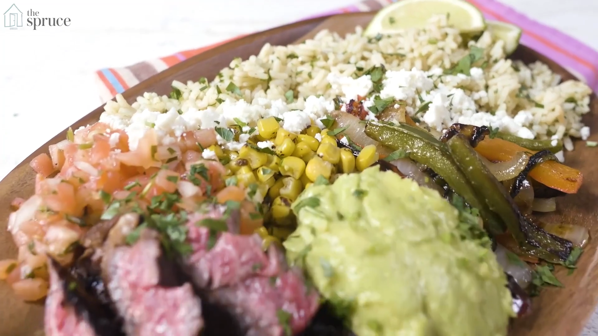

Beef flank can be cooked on the grill. Since it has tough muscle fibers, it can get even tougher if it's overcooked, so be careful.
The best technique for flank steak is to grill it quickly at a high temperature. Marinating the meat first can help prevent it from drying out, but avoiding overcooking really is the best prevention. When you're ready to serve it, remember to slice this steak thinly against the grain so it isn't chewy.
Beef flank is also good for braising and it's often used for making ground beef.
Steak Fajita Bowls
Prep: 5 mins
Cook: 15 mins
Total: 20 mins
Servings: 4 - 6 servings
Ingredients
For the Steak:
- 8-12 ounce Flank steak
- 1/3 cup lime juice
- 1/4 cup pineapple juice
- 2 tablespoons Worcestershire sauce
- 2 teaspoons chili powder
- 2 teaspoons ground cumin
- 1 teaspoon paprika
- 1/2 teaspoon red pepper flakes
- 1 tablespoon garlic minced
- 1 teaspoon salt
- 1/2 teaspoon black pepper
- 1/4 cup cilantro
For the Garlic Lime Rice:
- 1 tablespoon butter
- 1 1/2 cups rice
- 2 teaspoons garlic (minced)
- 2 3/4 cup low-sodium chicken broth (check the liquid amounts recommended on your rice package and adjust as needed)
- a pinch of salt
- 3 tablespoons lime juice
- Optional: cilantro
- Garnish: corn, black beans, guacamole, sour cream, shredded cheese, veggies, tortilla chips, salsa, hot sauce and anything that comes to your mind
- Salt and pepper to taste
For the Vegetables:
- 1 tablespoon olive oil
- 2 Bell peppers
- 2 Poblano peppers
- 2 Onions
Recipe
- Make the marinade: combine all the ingredients and marinate the meat, covered in the refrigerator for at least 2 hours and up to overnight. Remove from the refrigerator about 30 minutes before cooking.
- Warm a cast iron skillet over high heat. Add the steak to the pan and cook on each side for about 3-5 minutes, longer if you’d like it more done. Feel for desired firmness. Remove the steak from the pan and let it rest under foil for 10 minutes. Thinly slice the steak against the grain.
- Make the fajita vegetables: Add oil to the same pan over medium high heat. Add the onions, poblano and bell peppers. Cook for 3-5 minutes or until your desired softness, tossing frequently. Add a pinch of salt and pepper to taste. Set aside.
- Make the rice: Heat the butter in a pan or pot over medium heat. Add the rice and toast for 2-3 minutes, being careful not to burn it. Add the garlic and cook just until the garlic is fragrant, about 30 seconds. Add the chicken broth, salt, and lime juice. Bring it to a boil. Cover, reduce heat to low and allow the rice to cook through, absorbing all the liquid. If you’d like to add some chopped cilantro, let is stand for 5-10 minutes and then stir in.
- Assemble the bowls: Fill each bowl with a scoop of the rice, top with some fajita vegetables, add a few pieces of steak and then add any toppings you like
Tip